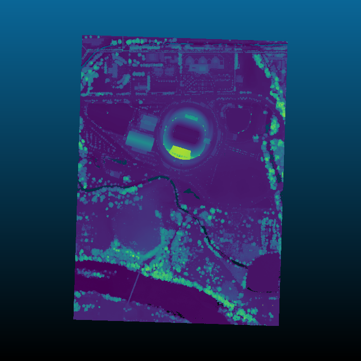
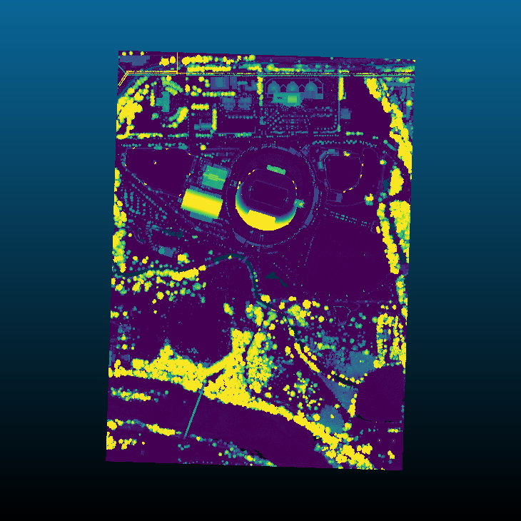

filters.hag_delaunay
The Height Above Ground Delaunay filter takes as input a point cloud with
Classification set to 2 for ground points. It creates a new dimension,
HeightAboveGround, that contains the normalized height values.
Note
We expect ground returns to have the classification value of 2 in keeping with the ASPRS Standard LIDAR Point Classes.
Ground points may be generated by filters.pmf or filters.smrf, but you can use any method you choose, as long as the ground returns are marked.
Normalized heights are a commonly used attribute of point cloud data. This can also be referred to as height above ground (HAG) or above ground level (AGL) heights. In the end, it is simply a measure of a point’s relative height as opposed to its raw elevation value.
The filter creates a delaunay triangulation of the count ground points
closest to the non-ground point in question. If the non-ground point is within
the triangulated area, the assigned HeightAboveGround is the difference
between its Z value and a ground height interpolated from the three
vertices of the containing triangle. If the non-ground point is outside of the
triangulated area, its HeightAboveGround is calculated as the difference
between its Z value and the Z value of the nearest ground point.
Choosing a value for count is difficult, as placing the non-ground point in the triangulated area depends on the layout of the nearby points. If, for example, all the ground points near a non-ground point lay on one side of that non-ground point, finding a containing triangle will fail.
Example #1
Using the autzen dataset (here shown colored by elevation), which already has points classified as ground
{kind=link}
we execute the following pipeline
[
"autzen.laz",
{
"type":"filters.hag_delaunay"
},
{
"type":"writers.laz",
"filename":"autzen_hag_delaunay.laz",
"extra_dims":"HeightAboveGround=float32"
}
]
which is equivalent to the pdal translate command
$ pdal translate autzen.laz autzen_hag_delaunay.laz hag_delaunay \
--writers.las.extra_dims="HeightAboveGround=float32"
In either case, the result, when colored by the normalized height instead of elevation is
{kind=link}
Options
- count
The number of ground neighbors to consider when determining the height above ground for a non-ground point. [Default: 10]
- allow_extrapolation
If false and a non-ground point lies outside of the bounding box of all ground points, its
HeightAboveGroundis set to 0. If true anddelaunayis set, theHeightAboveGroundis set to the difference between the heights of the non-ground point and nearest ground point. [Default: false]
- where
An expression that limits points passed to a filter. Points that don’t pass the expression skip the stage but are available to subsequent stages in a pipeline. [Default: no filtering]
- where_merge
A strategy for merging points skipped by a ‘where’ option when running in standard mode. If
true, the skipped points are added to the first point view returned by the skipped filter. Iffalse, skipped points are placed in their own point view. Ifauto, skipped points are merged into the returned point view provided that only one point view is returned and it has the same point count as it did when the filter was run. [Default:auto]